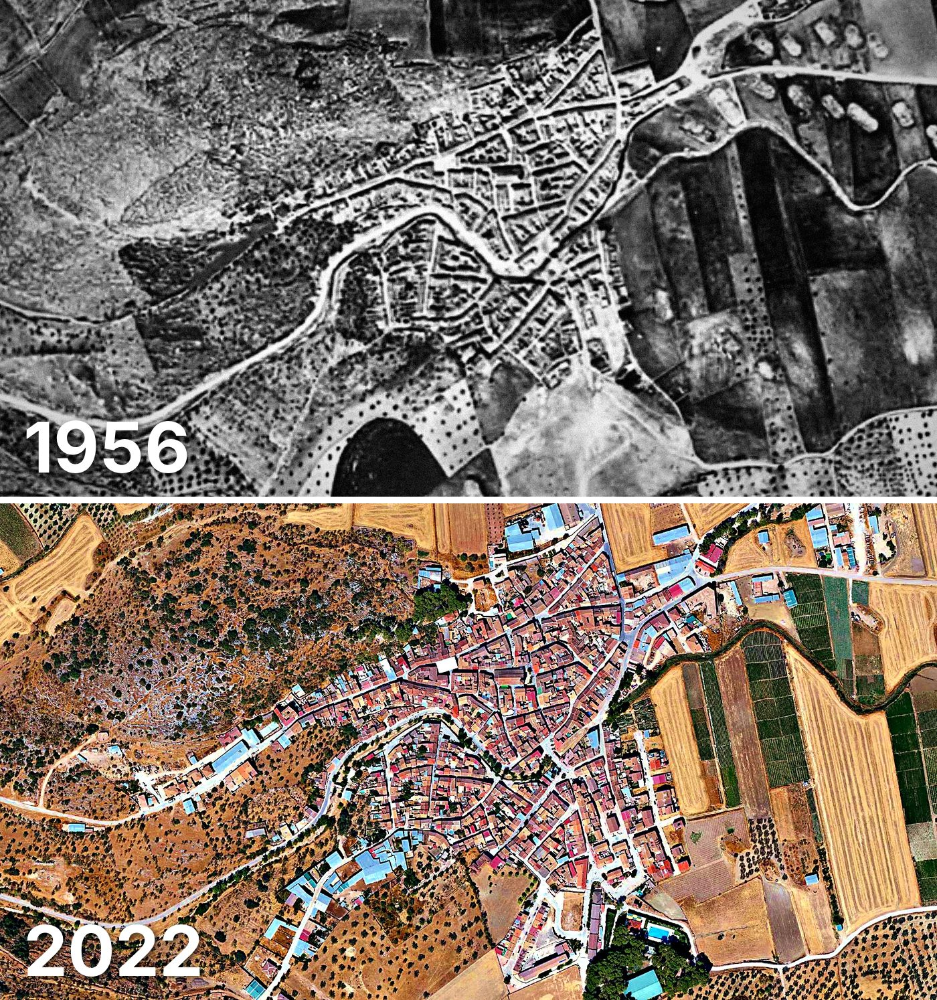

Alfarnate
Alfarnate tiene 711 edificios y 738 viviendas, y 1.034 habitantes en 2025. La mitad de sus edificios es de 1975 o posterior.
Cuándo se construyeron sus edificios
Desde 2015 se han terminado 4 edificios.

Las calles de Alfarnate con más viviendas
- Calle Perchel · 54 viviendas
- Calle Río · 36 viviendas
- Calle Oriente · 33 viviendas
- Calle Ermita · 32 viviendas
- Calle Loja · 30 viviendas
- Calle Carnicería · 29 viviendas
- Calle Mediodía · 25 viviendas
- Calle Robles · 25 viviendas
- Calle Carretería · 21 viviendas
- Calle Triana · 20 viviendas
Toda la información de Alfarnate en CASAS.ES →
Fotos de Alfarnate para publicar
Estas fotos aéreas de Alfarnate, de 1956 y de 2022, se pueden publicar gratis en un periódico, un blog, la web del ayuntamiento o las redes, citando la fuente como se indica debajo.

Descargar: las dos juntas · 1956 · 2022 (JPG, 1.400 px de ancho)


Texto listo para publicar
Alfarnate desde el aire: así era en 1956 y así es en 2022
Las dos fotos muestran el mismo encuadre de Alfarnate con 66 años de diferencia: arriba, el Vuelo Americano de 1956; abajo, la foto aérea del PNOA de septiembre de 2022. Hoy Alfarnate tiene 711 edificios y 738 viviendas, y 1.034 habitantes en 2025. La mitad de sus edificios es de 1975 o posterior. El 35 % de sus edificios ya estaba en pie antes de 1960.
Más datos de Alfarnate en CASAS.ES: casas.es/malaga/alfarnate
Cita para copiar
Fotos: Vuelo Americano Serie B (1956-57) y PNOA 2022, cedidos por © Instituto Geográfico Nacional (CC BY 4.0, scne.es). Datos y composición: <a href="https://casas.es/malaga/alfarnate/">los datos de Alfarnate en CASAS.ES</a>Descarga: municipios (CSV) · calles (CSV) · Wikidata (Q1624009) · cómo usarlos en Python (dev.to) · también en OSF, Figshare y B2SHARE